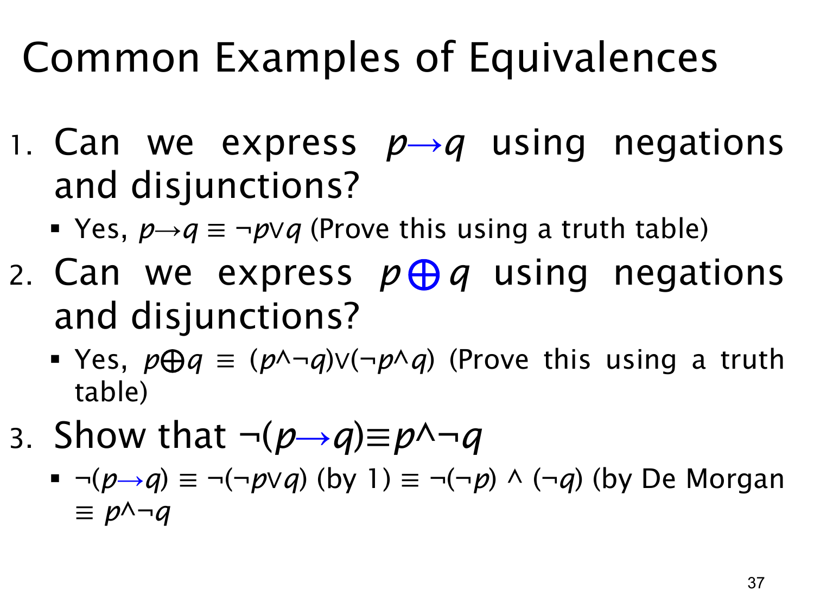

L1.1 · 第 37 页讲解原文
查看这一页课件

三个常用等价变形
这页用真值表和已知规律说明，复合命题可以换一种写法而不改变真值。
1. 蕴含可以只用否定与析取表示。
p→q≡¬p∨q.
两式都只在 p 真、q 假时为假；其余三种组合为真。因此“如果 p，那么 q”也可以读成“不是 p，或者 q”。
2. 异或可以拆成两个互斥情况。
p⊕q≡(p∧¬q)∨(¬p∧q).
右边分别是“只有 p 真”和“只有 q 真”，用“或”合起来，正好覆盖异或为真的两行。课件的问题写着“只用否定和析取”，但它展示的等价式仍含有合取 ∧；这个式子本身正确，只是没有严格满足那句用符号的限制。若确实只允许 ¬ 与 ∨，再用德摩根律把合取消去即可，例如
p⊕q≡¬(¬p∨q)∨¬(p∨¬q).
3. 否定一个蕴含，就是找到它的唯一反例。 先用第 1 条，再用德摩根律和双重否定：
¬(p→q)≡¬(¬p∨q)≡¬¬p∧¬q≡p∧¬q.
所以“并非如果 p 就 q”要求 p 已经发生，而 q 没有发生。这也解释了为什么证明一个条件命题为假，只需提供一个满足前提却不满足结论的反例。
查看本页勘误
L1.1 第 37 页：异或改写的符号限制
课件第 2 小题问能否只用“negations and disjunctions”（否定和析取）表示 p⊕q，随后给出的 (p∧¬q)∨(¬p∧q) 仍含合取 ∧。这个等价式本身正确，但没有严格满足题干所说的符号限制。
若只允许 ¬ 与 ∨，可进一步用德摩根律改写为
p⊕q≡¬(¬p∨q)∨¬(p∨¬q).
本勘误只解释课件措辞与示例之间的差别；第 37 页讲解原文保持不变。